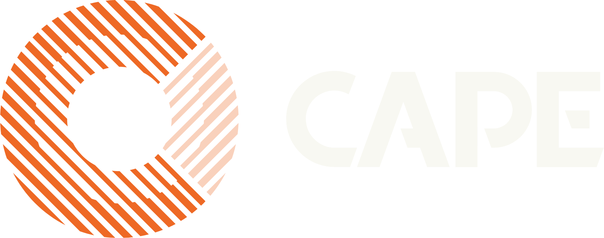

Krijg toegang tot erkende logistiek adviseurs en gespecialiseerde calculatietools.
Ontdek waar marge weglekt in planning of belading en verbeter je concurrentiepositie.
Bepaal waar je bedrijf staat en met welke stap je start. Daarna begeleidt een adviseur je bij het onderzoek en verbeteren.
Je stelt een CO₂-jaarrapport op volgens de nieuwste standaarden. Dit inzicht vormt de basis voor gerichte verbeteringen.
Koppel ritten en verbruik direct aan specifieke orders om direct te zien waar je marge verdampt.
Analyseer de oorzaken van inefficiëntie, voer verbeteringen door en meet het effect.
Maak plannen met ketenpartners voor een slimmere inrichting van de gezamenlijke logistiek.
Deep-dive in beladingsgraad via de LPI, waardoor je diepgaand inzicht krijgt in belading en lege kilometers.